文献信息
J. R. Petta et al., “Pulsed-gate measurements of the singlet-triplet relaxation time in a two-electron double quantum dot”, Physical Review B 72, 161301(R) (2005). arXiv:cond-mat/0412048 · DOI:10.1103/PhysRevB.72.161301 原文为 arXiv 预印本版本的机器可读转换，公式与图注以原文为准；本页仅作站内索引与全文查阅，引用请以正式出版物为准。
全文
d)
Pulsed-gate measurements of the singlet-triplet relaxation time in a two-electron double quantum dot
J. R. Petta,1 A. C. Johnson,1 A. Yacoby,1, 2 C. M. Marcus,1 M. P. Hanson,3 and A. C. Gossard3
1Department of Physics, Harvard University, Cambridge, MA 02138 2Department of Condensed Matter Physics, Weizmann Institute of Science, Rehovot 76100 Israel 3Materials Department, University of California, Santa Barbara, CA 93106 (Dated: September 10, 2018)
A pulsed-gate technique with charge sensing is used to measure the singlet-triplet relaxation time for nearly-degenerate spin states in a two-electron double quantum dot. Transitions from the (1,1) charge occupancy state to the (0,2) state, measured as a function of pulse cycle duration and magnetic field, allow the (1,1) singlet-triplet relaxation time and the (0,2) singlet-triplet splitting to be measured. The use of charge sensing rather than current measurement allows long relaxation times to be readily probed.
PACS numbers: 73.21.La, 73.23.Hk, 85.35.Gv
Semiconductor quantum dots are promising systems for the manipulation of electron spin because of the relative ease of confining and measuring single electrons [1]. In order to make use of the spin degree of freedom as a holder of either classical or quantum information, it is first necessary to understand and characterize the mechanisms that lead to spin relaxation and decoherence.
Previous studies of spin relaxation in quantum dots have focused on systems with large energy splittings of the relevant spin states, either singlet and triplet twoelectron states, split by 600 µeV [2], or Zeeman states, split by 200 µeV [3, 4, 5]. In these cases, spin-orbit mediated processes are expected to dominate spin relaxation [6, 7], while processes involving hyperfine coupling of electron spin to nuclei are relatively inefective for splittings greater than the hyperfine coupling scale 0.1 meV , where is the efective number of nuclei interacting with the electron spin [8, 9, 10]. Spin relaxation between nearly degenerate electronic states is particularly relevant to the problem of controlled entanglement, as singlet-triplet splitting goes to zero as the entangled spins become spatially separated.
In this Letter, we present pulsed-gate measurements of the singlet-triplet relaxation times and splittings in a two-electron double quantum dot. Spin states of the weakly-coupled (1,1) charge configuration (integer pairs specify the equilibrium charge occupancy on the left and right dot) are nearly degenerate. A spin selection rule impedes the transition from (1,1) spin triplets to the (0,2) singlet. To probe spin relaxation, the double dot is initialized, then loaded into the (1,1) state, then placed in a configuration where (0,2) is the preferred charge distribution in equilibrium. This transition probability is measured from a calibrated charge sensing signal as a function of the period of this three-step cycle. The resulting characteristic time of sets the time scale for of the spin-blockaded relaxation channels from (1,1) to the singlet state of (0,2). Measurements of the (1,1) to (0,2) transition probability as a function of detuning, ǫ, show a strong dependence on perpendicular magnetic field, • reflecting the singlet-triplet splitting of the (0,2) charge state, J as discussed below.
Samples are fabricated from a As heterostructure grown by molecular beam epitaxy. Electron beam lithography and liftof are used to create Ti/Au gates that deplete a 100 nm deep two-dimensional electron gas with electron density and mobility . Gates 2–6 and 12 form the double quantum dot [see Fig. 1(a)]. Gates 2 and 6 are connected via bias tees to dc voltage sources and to pulse generators through coax cables with 20 dB of inline attenuation [11]. A QPC charge detector is created by depleting gate 1. Gates 7–11 are unused. The QPC conductance, is measured using standard lock-in amplifier techniques with a 1 nA current bias at 93 Hz. The electron temperature, mK, was determined from Coulomb blockade peak widths. We present results from a single sample; a second sample with slightly larger lithographic dimensions gave qualitatively similar results [12].
a)
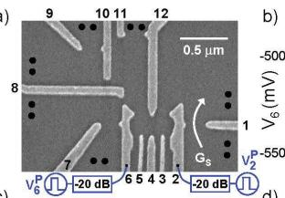
c)
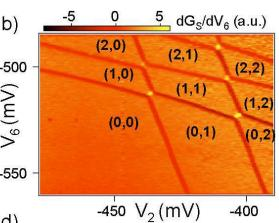
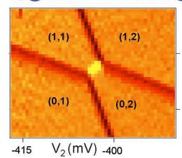
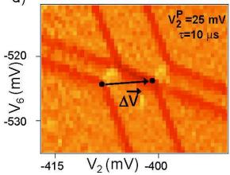
FIG. 1: (a) SEM image of a device identical in design to the one used in this experiment. Gates 2–6 and 12 define the double dot. • denotes an ohmic contact. (b) Large-scale plot of as a function of and . Charge states are labelled (M,N), where M(N) is the time averaged number of electrons on the left (right) dot. (c) Zoom in near the (1,1) to (0,2) charge transition. (d) 25 mV pulses with a 50% duty cycle and 10 µs period are applied to the coax connected to gate 2. This results in two copies of the charge stability diagram shifted relative to one another by
QPC charge sensing is used to determine the absolute number of electrons in the double dot. Figure 1(b) shows a large-scale charge stability diagram for the double dot. As electrons enter or leave the double dot, or transfer from one dot to the other, changes, resulting in sharp features in (numerically diferentiated) [12, 13]. In the lower left corner of Fig. 1(b), the double dot is completely empty. As the gate voltages are made more positive, electrons are added to the double dot. We will focus on the two-electron regime near the (1,1) to (0,2) charge transition [Fig. 1(c)]. In this location, charge transport in a double dot shows a striking asymmetry in bias voltage due to spin selection rules (Pauli blocking) [14, 15]. At forward bias, transitions from the (0,2)S to the (1,1) singlet state (1,1)S are allowed. However, for reverse bias, the (1,1) to (0,2) transition can be blocked if the (1,1) state forms a because the state resides outside the transport window due to the large singlet-triplet splitting in (0,2). This asymmetry results in current rectification, which is used in present pulsed gate measurements.
The double dot is electrostatically driven by applying pulses to gates 2 and 6. Figure 1(d) shows a charge stability diagram acquired with square pulses applied to gate mV, 50% duty cycle, period This results in two copies of the charge stability diagram, the right-most (left-most) charge stability diagram reflects the ground state charge configuration during the low (high) stage of the pulse sequence. The gate-voltage ofset between the charge stability diagrams, , is used to calibrate pulse amplitudes. Additional calibrations are performed for gate 6, which primarily shifts the honeycomb in the vertical direction (not shown). A linear combination of pulses on gates 2 and 6 can be used to shift the stability diagram in any direction in gate space.
As a control, we compare a forward pulse sequence, where spin selection rules are expected to be important, with a reversed pulse sequence that does not involve spin selective transitions. The forward pulse sequence begins with the gates at point E for 10% of the period, emptying the second electron from the double dot, leaving the (0,1) charge state. The gates then shift to the reset point R for the next 10% of the period, which initializes the system into the (1,1) configuration. The interdot tunnel coupling, t, is tuned with so that the (1,1) singlet-triplet splitting , where U is the single dot charging energy. Due to this degeneracy, and at low fields such that 44 for , we expect to load into (1,1) or any of the three states with equal probability. For the final 80% of the period, the gates are at the measurement point M where (0,2)S is the ground state. Figure 2(b) illustrates the possible (1,1) to (0,2) transitions. If the R
a)
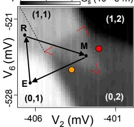
c)
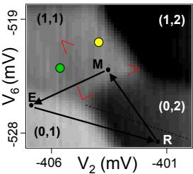
d) Reverse pulse sequence “control”
b) Forward pulse sequence
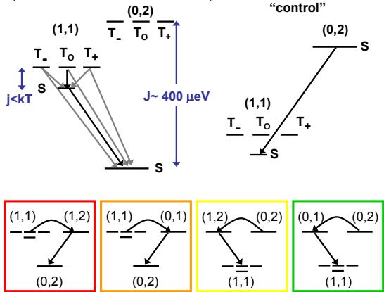
FIG. 2: (a) Sensor conductance, , as a function of V2 and while applying the forward pulse sequence (see text) with µs and mT. Spin-blocked transitions result in some (1,1) charge signal in the (0,2) pulse triangle (bounded by the red lines). Outside of the pulse triangle it is possible to access other charge states. This relaxes the spin blockade (see color-coded level diagrams). (b) Level diagram illustrating the possible transitions from (1,1) to (0,2). Black arrows indicate fast transitions, grey arrows indicate spin blocked transitions. (c) as a function of and while applying the reverse “control” pulse sequence with and . The to transition is not spin blocked. As a result, there is no detectable pulse signal in the pulse triangle (bounded by the red lines). (d) Level diagram illustrating the (0,2) to (1,1) transition. A best-fit plane has been subtracted from the data in to remove signal from direct gate to QPC coupling.
step loads the state, tunneling to occurs on a timescale given by the interdot tunneling rate, Γ(ǫ) (We estimate the slowest from finite bias data [15]). If the triplet state is loaded, it dephases into (1,1) on a timescale of (expected to be ns [10, 16, 17]) followed by a direct transition to . About half the time the R step will load the triplet state or the triplet state At low is inaccessible, and a transition from or to (0,2) requires a spin flip and will be blocked for times shorter than the singlet-triplet relaxation time
In Fig. 2(a) the average charge sensor signal, , is measured as a function of the dc gate voltages and , while a pulse sequence is repeated. This has the effect of translating the points E, R, and M throughout the charge stability diagram, keeping their relative positions constant. Because most of the time is spent at point M, the grayscale data primarily map out the ground state population for this point, with plateaus at 16, and 23 indicating full population of the (1,2), (0,2), (1,1), and (0,1) charge states respectively. The pulse data difers from ground state data only when point M resides in the triangle defined by the (1,1) to (0,2) ground state transition and the extensions of the (1,1) to (0,1) and (1,1) to (1,2) ground state transitions (bounded by the red marks in Fig. 2(a)). Within this “pulse triangle” transitions from (1,1) to (0,2) may be blocked as described above, and the charge sensor registers a conductance intermediate between the (1,1) and (0,2) plateaus. If M moves above the pulse triangle (red dot in Fig. 2(a)), the (1,1) to (0,2) transition can occur sequentially via (1,2) with no interdot tunneling: a new electron enters the right dot, then the electron in the left dot leaves. Likewise, if M moves below the pulse triangle (orange dot in Fig. 2(a)) the transition can occur via (0,1): the left-dot electron leaves, then a new electron enters the right dot. By similar logic, point R must be to the left of the (0,1) to (0,2) transition extension (dotted line in to avoid resetting through (0,2) and preferentially loading (1,1)S. Figure shows a signal of in the pulse triangle for , which indicates that approximately 50% of the time the dots remain in (1,1) even though (0,2) is the ground state. This is direct evidence of spin-blocked (1,1) to (0,2) transitions.
-396 -393
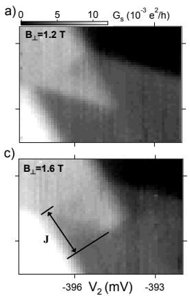
If the the pulse sequence is reversed, so that the reset position R occurs in (0,2), where only the singlet state is accessible, and M occurs in (1,1), tunneling from R to M should always proceed on a time scale set by the interdot tunnel coupling, since the (0,2)S to (1,1)S transition is not spin blocked. As anticipated, no signal is seen in the pulse triangle for this reversed “control” sequence (Fig. ).
Spin selectivity of the forward pulse sequence in Fig. 3 can be used to measure J as a function of ⊥ [18]. Figure shows as a function of and while applying the forward pulse sequence with and For these data, (0,2)T resides outside of the pulse triangle , the mutual charging energy) and the to (0,2) transitions are spin blocked. For T [Fig. 3(b)] the state is low enough in energy that the states can directly tunnel to the manifold at high detunings. Now (1,1) to (0,2) tunneling can proceed, and there is no longer a (1,1) charge signal in the (0,2) region of the pulse triangle at high detuning. This cuts of the tip of the pulse triangle. The spin-blocked region continues to shrink as ⊥ is increased. From these data, we find J 340, 280, and 180 for , and 1.8 T, respectively [19].
The time dependence of the charge sensing signal can be investigated by varying the overall period of the cycle. Figure shows as a function of and acquired using the forward pulse sequence with µs at mT. A clear pulse signal is observed in the pulse triangle. is increased, the pulse signal decreases as shown in is measured inside the pulse triangle held fixed at -403,-523.8 mV, respectively) and is plotted as a function of in Fig. . In (1,1), , whereas outside the pulse triangle in (0,2), . For small in the pulse triangle. At long τ, approaches in the pulse triangle, which indicates complete transfer from the (1,1) to (0,2) charge state.
b)
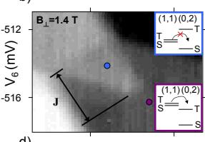
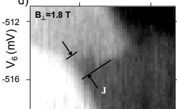
FIG. 3: Forward pulse sequence results with µs. as a function of and for increasing reduces Eventually is lowered into the pulse window [inset of (b)]. At this point, (1,1)T to (0,2)T transitions are energetically possible and the transition from the (1,1) to (0,2) charge state is no longer “spin blocked”. This cuts of the tip of the pulse triangle in (0,2), see (b). A best-fit plane has been subtracted from the data in (a)–(d).
These data are consistent with spin-blocked transitions preventing the (1,1) to (0,2) charge transition. Approximately 50% of the time, the (1,1) R pulse loads into either . These states may relax into the state and then tunnel to on a timescale set by τST. For , we expect that 50% of the (1,1) to (0,2) transitions will be spin-blocked, resulting in 50% (1,1) pulse signal in the (0,2) pulse triangle. For the and (1,1) states have ample time to relax to , after which a (1,1) to transition can take place. Thus, for long compared to , the pulse signal to approaches the (0,2) level, indicating full transfer from (1,1) to (0,2). In the intermediate τ regime, the sensor signal due to spin-blocked transitions decays as a function of time on a timescale that is characteristic of τ ST.
The experimental data in Fig. 4(d) are fit assuming exponential singlet-triplet relaxation. Due to the slow measurement rate of the charge sensor ( 100 ms), is proportional to the time-averaged occupation of the left dot. Modeling an exponential decay of the sensing signal weighted over the 80% of the cycle corresponding to the (0,2) measurement gives , where A is the conductance asymptote at long times (full occupation of the (0,2) state) and B is the additional conductance in a short pulse due to the blocked states (approximately 50% of the (0,2) to (1,1) step height). The best fit to the data in Fig. 4(d) gives and , consistent with these expectations. In the center of the pulse triangle the bestfit reaches a maximum of . Near the
a)
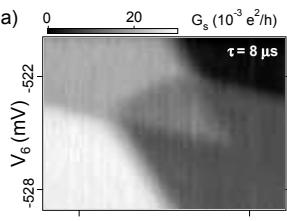
c)
b)
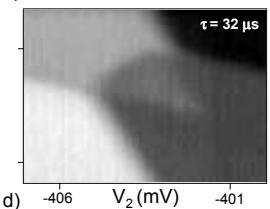
d)
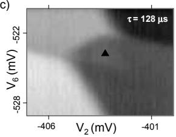
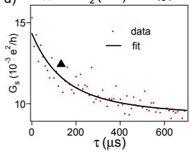
FIG. 4: Forward pulse sequence results with mT. (a)–(c) as a function of and for increasing pulse periods, For longer periods, singlet-triplet relaxation occurs and the to (0,2) transition proceeds, reducing the signal in the (0,2) pulse triangle. (d) with mV, 523.8 mV (gate voltage position indicated by the black triangle in (c)) measured as a function of τ. in the (0,2) charge state, while in the (1,1) charge state. For short the (1,1) to (0,2) transition is blocked approximately half of the time, resulting in a pulse signal of in the (0,2) pulse triangle. The (1,1) to (0,2) transition probability increases (sensor signal decreases) with τ due to spin-relaxation with a characteristic time scale of 70±10 µs. A best-fit plane has been subtracted from the data in (a)–(c).
[1] M. Ciorga et al., Phys. Rev. B 61, 16315 (2000).
[2] T. Fujisawa et al., Nature 419, 278 (2002).
[3] R. Hanson et al., Phys. Rev. Lett. 91, 196802 (2003).
[4] J. M. Elzerman et al., Nature 430, 431 (2004).
[5] M. Kroutvar et al., Nature 432, 81 (2004).
[6] A. V. Khaetskii and Y. V. Nazarov, Phys. Rev. B 61, 12639 (2000).
[7] V. N. Golovach, A. Khaetskii, D. Loss, Phys. Rev. Lett. 93, 016601 (2004).
[8] M. Dobers et al., Phys. Rev. Lett. 61, 1650 (1988).
[9] S. I. Erlingsson, Y. V. Nazarov, V. I. Fal’ko, Phys. Rev. B 64, 195306 (2001).
[10] A. V. Khaetskii, D. Loss, L. Glazman, Phys. Rev. Lett. 88, 186802 (2002).
[11] We use Anritsu K251 bias tees. Tektronix AWG520 pulse generators are used for high speed manipulation of the gate voltages.
[12] J. R. Petta et al., Phys. Rev. Lett. 93, 186802 (2004).
(1,1) to (0,2) transition, decreases, to 20 5 at mV and mV. Closer to the tip of the pulse triangle, τST decreases due to thermally activated exchange with the leads (See Fig. 2, red and orange diagrams), thus the 70 relaxation time represents a lower bound on the spin relaxation time within the (1,1) manifold [20].
In GaAs quantum dots, spin-orbit and hyperfine interactions are expected to be the dominant mechanisms for spin relaxation. The spin-orbit contribution to depends strongly on B and theory predicts ms for The hyperfine spin relaxation rate is where reflects the electron-phonon coupling, meV is the nuclear energy for a fully polarized system, is derived from the correlation of the nuclear spins, depends on wavefunction overlap, the nuclear spin , and [9]. Our sample is tuned with . In this case, the Zeeman splitting between the state and states sets the relevant energy scale. Using gives roughly consistent with the experimental results. The relaxation times found here can be compared with those obtained by Fujisawa et who measured in a vertical dot [2]. In those measurements, the sizable singlet-triplet splitting implies that spin-orbit processes rather than nuclear processes dominant, in contrast to the present experiments.
Acknowledgments
We acknowledge useful discussions with Jacob Taylor, Hans-Andreas Engel, and Mikhail Lukin. This work was supported by the ARO under DAAD55-98-1-0270 and DAAD19-02-1-0070, DARPA under the QuIST program, the NSF under DMR-0072777 and the Harvard NSEC.
[13] J. M. Elzerman et al., Phys. Rev. B 67, 161308 (2003).
[14] K. Ono et al., Science 297, 1313 (2002).
[15] A. C. Johnson et al., cond-mat/0410679.
[16] J. M. Kikkawa and D. D. Awschalom, Phys. Rev. Lett. 80, 4313 (1998).
[17] I. A. Merkulov, Al. L. Efros, M. Rosen, Phys. Rev. B 65, 205309 (2002).
[18] R. C. Ashoori et al., Phys. Rev. Lett. 71, 613 (1993).
[19] The conversion from gate voltage to energy is determined by measuring finite bias triangles.
[20] Γ(ǫ) is set to be much faster than the characteristic relaxation times that we measure in this experiment. Γ(ǫ) varies strongly with ǫ (see ref. 13). The fact that τST only varies by roughly a factor of three in the pulse triangle also indicates that the transitions are spin-blocked and not limited by a slow Γ(ǫ).